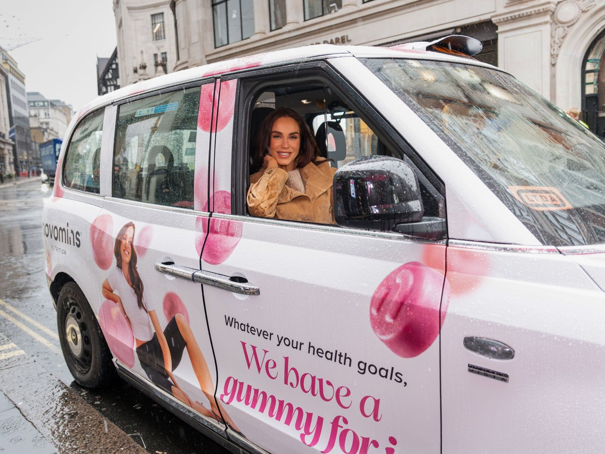
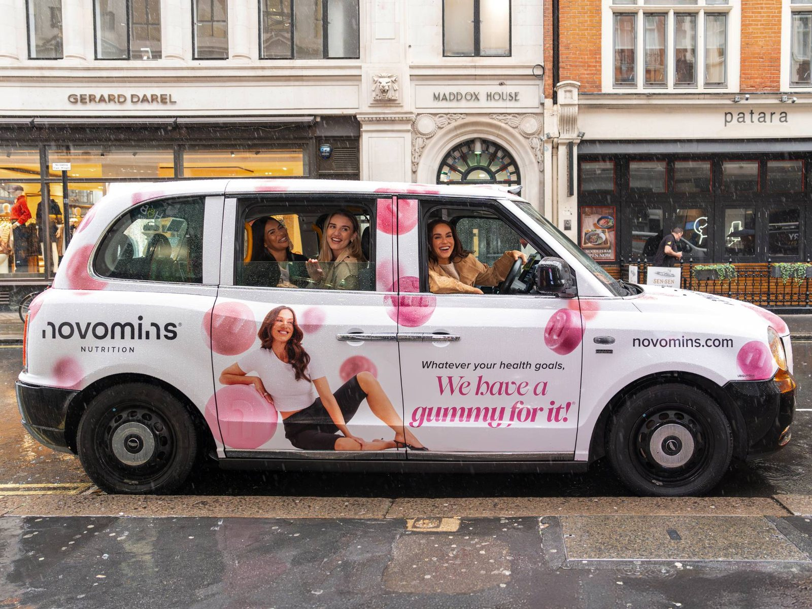
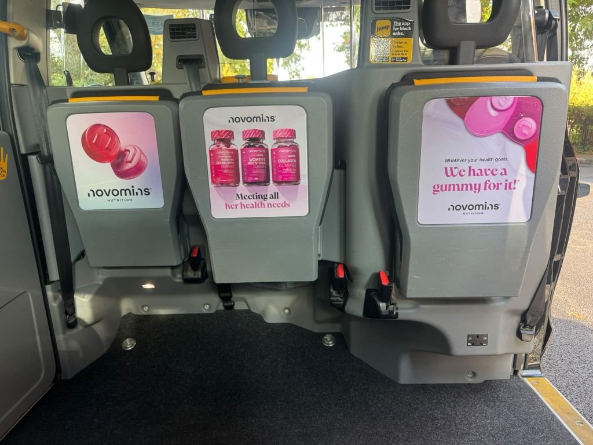

Client
Novomins Nutrition

Case study · Novomins · Central London · October 2026
Putting women's health in the driver's seat: how Novomins used OOH to spark real conversations, with Vicky Pattison at the wheel of a full-wrap London taxi.
Read the storyNovomins Nutrition
Full-wrap London taxi activation
Central London
Vicky Pattison
Purpose-led brand advocacy & experiential OOH
The challenge
Too many women are still told their health symptoms are simply "normal", often waiting years for an accurate diagnosis because their concerns go unheard. When doctor-founded gummy vitamin brand Novomins decided to launch its first-ever out-of-home (OOH) campaign, the objective was never about chasing vanity metrics or passive impression counts.
Novomins wanted to bring overlooked health topics out of the shadows and into the public consciousness. The brief for Loud! OOH was to take a deeply personal subject and give it an unmissable physical presence on the streets of London, creating a campaign defined by genuine human connection rather than basic footfall numbers.
The strategy
Out-of-home advertising is traditionally viewed as a broadcast medium designed to put a product in front of as many eyeballs as possible. For Novomins, Loud! OOH flipped that script. Instead of treating outdoor media solely as a way to broadcast a message at an audience, the strategy focused on using OOH to create a physical platform for the audience.
The iconic London taxi was chosen as the centrepiece of the campaign. While a fully wrapped cab delivers standout street-level visibility across the capital, its real value for this activation lay on the inside. The back of a taxi is one of the most familiar, conversational spaces in British culture. By combining bold exterior branding with an intimate interior setting, the vehicle became both a public statement and a mobile safe space.

The execution
In October 2026, Novomins and Loud! OOH launched Put Women's Health in the Driver's Seat across central London. Wrapped in Novomins' distinctive pink branding and carrying the message, "Whatever your health goals, we have a gummy for it!", the taxi brought unapologetic visibility to female wellbeing.
To bring the activation to life, North-East personality and Novomins women's health ambassador Vicky Pattison stepped into the driver's seat. Having spoken openly about her own experiences with PMDD and the frustration of having symptoms dismissed, Vicky brought immediate warmth, honesty, and relatability to the campaign.
Throughout the activation, Vicky welcomed women into the cab across central London, using the journey to open up candid conversations about the health concerns that affect their daily lives, from hormonal balance and monthly cycles to stress and intimate health.

“Too many women are still being told their symptoms are 'normal', or waiting years for a diagnosis, simply because no one stopped to really listen. 'Put Women's Health in the Driver's Seat' is about changing that. Vicky brings honesty and warmth to every conversation, and by giving women a lift across London, we're giving them space to talk about the things that bother them, the things that get brushed aside, and the things they've never felt able to say out loud.
At Novomins, women's health isn't a side project; it's a serious focus. As a formulator and neuroscientist, I know how much daily nutrition can matter, which is why together with our in-house team of experts I created a dedicated range of gummy vitamins for women. Whether a woman is looking after her urinary health, supporting herself through her monthly cycle, or caring for her intimate balance, we want to be part of that everyday support. But this campaign is about more than products. We're here to educate, to listen and to give women a voice.”
Valerie Stark McQuillan, Formulator, Neuroscientist and Chief Marketing Officer at Novomins
Why it matters
Novomins' OOH debut proves what happens when a brand prioritises meaning over metrics:
Seeing women's health championed loudly on the side of a London taxi sends a clear signal that these conversations belong in everyday public life, not hidden away.
Bringing the conversation onto the streets created real-world warmth, eye contact, and solidarity that clinical digital ads cannot replicate.
Rather than simply listing product benefits, Novomins used physical media to demonstrate its core mission of educating, listening, and giving women a voice.
Whether you want to spark a national conversation or launch your very first outdoor activation, physical media offers a platform like no other. Explore our UK taxi advertising guide to see how formats, production, and costs break down, or get in touch with Loud! OOH today to start planning your next campaign.